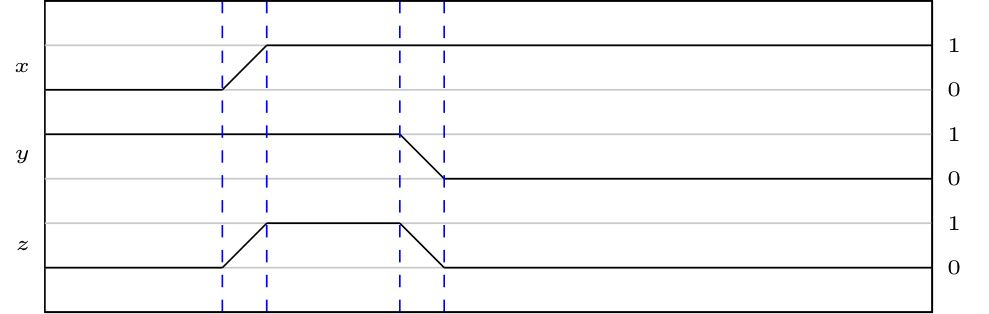

Definizione - Interruttore
Un metodo efficace per rappresentare un bit è utilizzare la posizione di un interruttore.
La logica è indipendente dalla tecnologia, infatti è analogo utilizzare un interruttore meccanico o un interruttore elettronico (un transistor): nel caso di quest'ultimo è possibile utilizzare un transistor per pilotare un altro transistor, permettendo la creazione di reti di interruttori.
La logica è indipendente dalla tecnologia, infatti è analogo utilizzare un interruttore meccanico o un interruttore elettronico (un transistor): nel caso di quest'ultimo è possibile utilizzare un transistor per pilotare un altro transistor, permettendo la creazione di reti di interruttori.
Definizione - Gate
Un gate è un componente elementare per la progettazione di reti logiche.
In realtà è una funzione che fa corrispondere un'uscita ad un certo ingresso.
Ogni gate può essere descritto da
In realtà è una funzione che fa corrispondere un'uscita ad un certo ingresso.
Ogni gate può essere descritto da
- una tabella della verità, ovvero una tabella in cui si fa corrispondere ad ogni possibile ingresso il valore corrispondente;
- un simbolo circuitale, che astrae gli interruttori necessari ad implementare il suo comportamento;
- un'espressione, che permette di rappresentare in forma compatta il gate.
Definizione - Rete logica
Per rendere possibile progettare un qualsiasi componente (che potrebbe contenere miliardi di transistor), si astraggono dei componenti primitivi di cui si conosce solo il comportamento (tramite un'interfaccia).
Una rete logica è quindi un'astrazione di una combinazione di interruttori o gate (rappresentati da adeguate interfacce) che elaborano segnali binari.
Una rete logica è quindi un'astrazione di una combinazione di interruttori o gate (rappresentati da adeguate interfacce) che elaborano segnali binari.
Definizione - Tabella della verità
La tabella della verità permette di descrivere univocamente il comportamento di una rete combinatoria.
Se la tabella della verità rappresenta un progetto, è possibile che nel caso di funzioni incomplete siano presenti meno righe o nelle uscite sia presente il simbolo '-' ("don't care"). Ciò non può però avvenire se tale tabella rappresenta una struttura: in questo caso, infatti, si ha che l'uscita deve assumere un valore.
Se la tabella della verità rappresenta un progetto, è possibile che nel caso di funzioni incomplete siano presenti meno righe o nelle uscite sia presente il simbolo '-' ("don't care"). Ciò non può però avvenire se tale tabella rappresenta una struttura: in questo caso, infatti, si ha che l'uscita deve assumere un valore.
Definizione - Schema logico
Lo schema logico è la descrizione grafica di una struttura formata da simboli di gate e da collegamenti tra le loro linee di ingresso e di uscita.
Definizione - Gate con \( n\) ingressi
Considerando \( n\) ingressi binari e un'uscita binaria, si hanno \( 2^{2^{n}}\) funzioni diverse.
Di queste funzioni, tuttavia, risulta utile considerarne solo alcune.
Il numero di ingressi di un gate è anche detto fan-in.
Di queste funzioni, tuttavia, risulta utile considerarne solo alcune.
Il numero di ingressi di un gate è anche detto fan-in.
Definizione - Gate con \( 1\) ingresso
Esistono \( 4\) funzioni differenti che hanno un unico ingresso \( x\), ovvero
- le funzioni costanti, ovvero \begin{aligned} & f_{0}(0) = 0 & f_{0}(1) = 0 \\ & f_{1}(0) = 1 & f_{1}(1) = 1 \end{aligned}
- la funzione identità, ovvero \begin{aligned} & f_{2}(0) = 0 & f_{2}(1) = 1 \end{aligned}
- la funzione \( f_{3}\) invertitore, ovvero \begin{aligned} & f_{3}(0) = 1 & f_{3}(1) = 0 \end{aligned}
Definizione - Il gate NOT
Il gate NOT (detto anche invertitore) trasforma l'ingresso nel suo opposto.
Esso è quindi descritto dalla seguente tabella della verità (dove \( x\) è l'ingresso e \( z\) è l'uscita)
Esso è quindi descritto dalla seguente tabella della verità (dove \( x\) è l'ingresso e \( z\) è l'uscita)
Il simbolo circuitale è il seguente
L'espressione utilizzata per indicare tale componente è \[ z = x' \] o \[ z = \bar{x} \]
Definizione - Gate con 2 ingressi
Esistono \( 16\) differenti funzioni che hanno due ingressi. Eliminando le funzioni costanti, la funzione identità e le funzioni che non sono commutative, ne rimangono solo \( 6\).
Definizione - Il gate AND
Il gate AND è l'astrazione di due interruttori in serie. L'uscita assume il valore logico 1 se entrambi gli ingressi hanno valore 1.
Esso è quindi descritto dalla seguente tabella della verità (dove \( x\) e \( y\) sono gli ingressi e \( z\) è l'uscita) Il simbolo circuitale è il seguente
Il simbolo circuitale è il seguente
Esso è quindi descritto dalla seguente tabella della verità (dove \( x\) e \( y\) sono gli ingressi e \( z\) è l'uscita)
L'espressione utilizzata per indicare tale componente è \[ z = x \cdot y \] o \[ z = xy \]
Definizione - Il gate OR
Il gate OR è l'astrazione di due interruttori in parallelo. L'uscita assume il valore logico 1 se almeno un ingresso ha valore 1.
Esso è quindi descritto dalla seguente tabella della verità (dove \( x\) e \( y\) sono gli ingressi e \( z\) è l'uscita) Il simbolo circuitale è il seguente
Il simbolo circuitale è il seguente
Esso è quindi descritto dalla seguente tabella della verità (dove \( x\) e \( y\) sono gli ingressi e \( z\) è l'uscita)
L'espressione utilizzata per indicare tale componente è \[ z = x + y \]
Definizione - Il gate EXOR
Il gate EXOR (EXclusive OR) è l'astrazione di due deviatori (ovvero interruttori che chiudono il circuito verso uno di due possibili percorsi). L'uscita assume valore logico 1 se solo un ingresso ha valore 1 ma non entrambi (ovvero devono avere valore differente).
Esso è quindi descritto dalla seguente tabella della verità (dove \( x\) e \( y\) sono gli ingressi e \( z\) è l'uscita) Il simbolo circuitale è il seguente
Il simbolo circuitale è il seguente  L'espressione utilizzata per indicare tale componente è \( z = x \oplus y\).
L'espressione utilizzata per indicare tale componente è \( z = x \oplus y\).
Tale componente è anche detto "somma modulo 2", in quanto il suo output può essere interpretato come il risultato della somma di due bit (escluso il riporto).
Esso è quindi descritto dalla seguente tabella della verità (dove \( x\) e \( y\) sono gli ingressi e \( z\) è l'uscita)
Tale componente è anche detto "somma modulo 2", in quanto il suo output può essere interpretato come il risultato della somma di due bit (escluso il riporto).
Definizione - Il gate NAND
Il gate NAND (Not AND) può essere visto come la combinanzione del gate AND e del gate NOT. L'uscita assume il valore logico 0 solo se entrambi gli ingressi hanno valore logico 1.
Esso è quindi descritto dalla seguente tabella della verità (dove \( x\) e \( y\) sono gli ingressi e \( z\) è l'uscita) Il simbolo circuitale è il seguente
Il simbolo circuitale è il seguente
Esso è quindi descritto dalla seguente tabella della verità (dove \( x\) e \( y\) sono gli ingressi e \( z\) è l'uscita)
L'espressione utilizzata per indicare tale componente è \[ z = x \uparrow y \] o \[ z = \overline{x \cdot y} \]
Definizione - Il gate NOR
Il gate NOR (Not OR) può essere visto come la combinanzione del gate OR e del gate NOT. L'uscita assume valore logico 0 se almeno uno degli ingressi ha valore logico 1.
Esso è quindi descritto dalla seguente tabella della verità (dove \( x\) e \( y\) sono gli ingressi e \( z\) è l'uscita)
Esso è quindi descritto dalla seguente tabella della verità (dove \( x\) e \( y\) sono gli ingressi e \( z\) è l'uscita)
Il simbolo circuitale è il seguente
L'espressione utilizzata per indicare tale componente è \[ z = x \downarrow y \] o \[ z = \overline{x + y} \]
Definizione - Il gate EXNOR
Il gate EXNOR può essere visto come la combinanzione del gate EXOR e del gate NOT. L'uscita assume valore logico 1 se i due bit sono uguali.
Esso è quindi descritto dalla seguente tabella della verità (dove \( x\) e \( y\) sono gli ingressi e \( z\) è l'uscita) Il simbolo circuitale è il seguente
Il simbolo circuitale è il seguente
Tale componente è anche detto "equivalence" perchè, nel caso abbia due ingressi, ha uscita 1 solo se i due ingressi sono uguali.
Esso è quindi descritto dalla seguente tabella della verità (dove \( x\) e \( y\) sono gli ingressi e \( z\) è l'uscita)
L'espressione utilizzata per indicare tale componente è \[ z = x \equiv y \] o \[ z = \overline{x \oplus y} \]
Tale componente è anche detto "equivalence" perchè, nel caso abbia due ingressi, ha uscita 1 solo se i due ingressi sono uguali.
Definizione - Gate con \( 3\) ingressi
Tutti i gate con \( 2\) ingressi elencati esistono anche con la configurazione a \( 3\) ingressi. In questo caso si avrà:
- l'uscita del gate AND a tre ingressi ha valore 1 solo se tutti gli ingressi hanno valore 1;
- l'uscita del gate OR a tre ingressi ha valore 1 se almeno uno degli ingressi ha valore 1;
- l'uscita del gate EXOR a tre ingressi ha valore 1 solo se il numero di ingressi è dispari.
- l'uscita dei gate NAND, NOR e EXNOR a tre ingressi è equivalente a un gate NAND, NOR e EXNOR a tre ingressi in serie ad un gate NOT.
Definizione - Diagrammi ad occhio
Per rappresentare gruppi di segnali binari in forma compatta si usano i diagrammi ad occhio.
Dato che i segnali binari sono concretamente dei segnali analogici che non cambiano valore instantaneamente, si ha che anche tali diagrammi inseriscono questo "ritardo". La lunghezza di questo segmento è detto "durata di transitorio". Ad esempio, il diagramma sopracitato rappresenta l'uscita \( z\) di un gate AND al variare degli ingressi \( x\) e \( y\).
Dato che i segnali binari sono concretamente dei segnali analogici che non cambiano valore instantaneamente, si ha che anche tali diagrammi inseriscono questo "ritardo". La lunghezza di questo segmento è detto "durata di transitorio".

Definizione - Diagrammi ad occhio e bus di segnali
È però spesso utile rappresentare con un solo segnale un gruppo di bit. Tale insieme di segnali è detto anche "bus". Ad esempio, per rappresentare il comportamento del seguente gate
è valido utilizzare il seguente diagramma
Nel caso di un bus (indicato appunto dall'etichetta "bit[2..0]"), quindi, si ha che la "posizione" della linea non indica il valore, ma solo la sua continuità.
Definizione - Ritardo inerziale di propagazione
Anche se a questo livello non si considerano gli interruttori sottostanti ma si astrae a livello dei gate, è necessario tenere a mente che tali componenti sono concreti.
La differenza principale tra l'astrazione della tabella della verità ed un gate reale è il "ritardo di propagazione", ovvero il fatto che una volta modificati i segnali, l'uscita non cambia instantaneamente, ma dopo un certo tempo \( \tau_{p}\), dipendente dalla tecnologia utilizzata. È importante sottolineare che tale ritardo è "inerziale", ovvero si ha che un impulso di durata inferiore a \( \tau_{p}\) sarà ignorato. Ciò comporta quindi una velocità limite di funzionamento di ogni gate.
Per comprendere meglio ciò, è utile osservare i seguenti diagrammi
La differenza principale tra l'astrazione della tabella della verità ed un gate reale è il "ritardo di propagazione", ovvero il fatto che una volta modificati i segnali, l'uscita non cambia instantaneamente, ma dopo un certo tempo \( \tau_{p}\), dipendente dalla tecnologia utilizzata. È importante sottolineare che tale ritardo è "inerziale", ovvero si ha che un impulso di durata inferiore a \( \tau_{p}\) sarà ignorato. Ciò comporta quindi una velocità limite di funzionamento di ogni gate.
Per comprendere meglio ciò, è utile osservare i seguenti diagrammi
il cui comportamento potrebbe essere il seguente
In questo caso è possibile notare la differenza tra l'uscita ideale \( "Z"\) e l'uscita reale "\( z\)". Ad esempio, a seguito della prima modifica del segnale, si ha che il segnale reale tarda \( \tau_{p}\) prima di cambiare. Inoltre, si ha che nel caso il segnale dura meno di \( \tau_{p}\), esso non appare in uscita.
Definizione - Possibili montaggi tra gate
Dato due o più gate è possibile montarli in tre modi diversi:
- in serie, quando l'uscita di un gate è l'ingresso di un altro, ovvero
- in parallelo, quando alcuni degli ingressi sono in comune;
- in retroazione, quando l'uscita di un gate è l'ingresso di un altro e l'uscita di quest'altro gate è l'ingresso del primo, ovvero

Nota bene - Configurazione non corretta
Collegare direttamente due uscite, ovvero
è un errore.
Definizione - Rete logica come componente
Una rete logica è un modello astratto che assume come primitive dei gate (ovvero elaborazioni di segnali binari) da cui è possibile dedurre:
Genericamente, una rete logica si rappresenta nel seguente modo
- quale struttura realizza un certo comportamento (attraverso la sintesi, il passaggio che dal comportamento permette di dedurre la struttura);
- qual è il comportamento di una certa struttura (attraverso l'analisi, il passaggio da struttura a comportamento).
Genericamente, una rete logica si rappresenta nel seguente modo
In particolare, si sta rappresentando una rete logica con \( n\) ingressi e \( m\) uscite: per convenzione si ha che gli ingressi sono posti a sinistra e le uscite a destra. Inoltre, si ha che i nomi dei segnali sono indicati all'interno della rete.
Definizione - Rete (o macchina) combinatoria
Una rete logica si definisce combinatoria se le uscite (dette variabili dipendenti) dipendono univocamente dagli ingressi (variabili dipendenti) correnti. Ciò significa che in presenza di una stessa configurazione di ingressi si ha sempre lo stesso risultato.
Nota bene - Un po' di esempi
Esempi di macchine combinatorie sono:
- il trascodificatore di codice da BCD a 7 segmenti;
- la tavola pitagorica;
- il dizionario.
Definizione - Rete (o macchina) sequenziale
Una rete logica si definisce sequenziale se l'uscita non dipende unicamente dagli ingressi correnti, ma dipende anche dalla storia passata e/o dallo scorrere del tempo. Ciò significa che in presenza di una stessa configurazione di ingressi si possono avere più uscite differenti.
Nota bene - Un po' di esempi
Esempi di macchine sequenziali sono:
- il distributore automatico (inserendo la stessa moneta è possibile che non fornisca lo stesso risultato, ad esempio se il credito non è sufficiente);
- il semaforo, che a fronte di nessun ingresso fornisce risultati differenti (dipendenti dal tempo).
Definizione - Funzioni complete e incomplete
Considerando una funzione di \( n\) variabili binarie (corrispondente ad una rete logica), si dice che è completa se per ognuna delle \( 2^{n}\) configurazioni è definito il valore dell'uscita. Nel caso non sia così, si dice che la funzione è incompleta (o non completamente specificata).